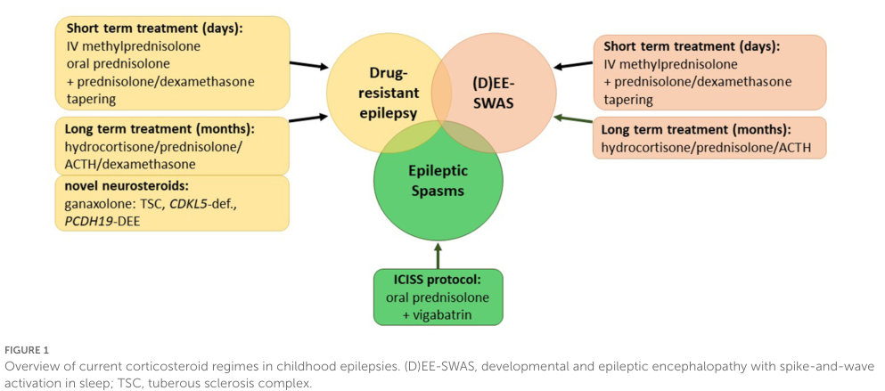

Landau-Kleffner syndrome (LKS), or acquired epileptic aphasia, is a rare childhood epileptic encephalopathy in which previously normal children (onset typically ages 3-6 years) lose acquired language skills, most prominently receptive language (auditory verbal agnosia), in association with continuous or near-continuous spike-and-wave discharges activated during slow-wave sleep (electrical status epilepticus in sleep, ESES/CSWS). LKS sits within the epilepsy-aphasia spectrum (EAS) together with rolandic epilepsy and the syndrome of continuous spike-and-wave during slow-wave sleep (CSWSS). About 20% of EAS cases (including LKS) are caused by pathogenic variants in GRIN2A, which encodes the GluN2A subunit of the NMDA glutamate receptor.
Ask a research question about Landau-Kleffner Syndrome. OpenScientist will conduct autonomous deep research using the Disorder Mechanisms Knowledge Base and PubMed literature (typically 10-30 minutes).
Do not include personal health information in your question. Questions and results are cached in your browser's local storage.
name: Landau-Kleffner Syndrome
creation_date: "2026-06-04T00:00:00Z"
category: Mendelian
disease_term:
preferred_term: Landau-Kleffner syndrome
term:
id: MONDO:0009509
label: Landau-Kleffner syndrome
parents:
- childhood-onset epilepsy syndrome
- GRIN2A-related complex neurodevelopmental disorder
description: >
Landau-Kleffner syndrome (LKS), or acquired epileptic aphasia, is a rare
childhood epileptic encephalopathy in which previously normal children (onset
typically ages 3-6 years) lose acquired language skills, most prominently
receptive language (auditory verbal agnosia), in association with continuous
or near-continuous spike-and-wave discharges activated during slow-wave sleep
(electrical status epilepticus in sleep, ESES/CSWS). LKS sits within the
epilepsy-aphasia spectrum (EAS) together with rolandic epilepsy and the
syndrome of continuous spike-and-wave during slow-wave sleep (CSWSS). About
20% of EAS cases (including LKS) are caused by pathogenic variants in GRIN2A,
which encodes the GluN2A subunit of the NMDA glutamate receptor.
references:
- reference: PMID:27683935
title: "GRIN2A-Related Disorders."
tags:
- GeneReviews
pathophysiology:
- name: GRIN2A/NMDA Receptor Dysfunction
description: >
In approximately 20% of LKS/epilepsy-aphasia spectrum cases, de novo or
inherited pathogenic variants in GRIN2A alter the function of the GluN2A
(NR2A) subunit of the NMDA glutamate receptor. Disrupted NMDA receptor
signaling perturbs excitatory glutamatergic neurotransmission and
synaptic plasticity in cortical neurons, providing the molecular substrate
for the epileptic encephalopathy.
cell_types:
- preferred_term: Cortical glutamatergic neuron
term:
id: CL:0000679
label: glutamatergic neuron
biological_processes:
- preferred_term: NMDA receptor (ionotropic glutamate receptor) signaling
term:
id: GO:0035235
label: ionotropic glutamate receptor signaling pathway
modifier: ABNORMAL
- preferred_term: Glutamatergic synaptic transmission
term:
id: GO:0035249
label: synaptic transmission, glutamatergic
modifier: ABNORMAL
downstream:
- target: Perisylvian and Hippocampal Structural Anomalies
description: >-
NMDA-receptor (GluN2A) dysfunction perturbs development of perisylvian
speech-language networks and the hippocampus.
evidence:
- reference: PMID:38715655
reference_title: Perisylvian and Hippocampal Anomalies in Individuals With Pathogenic GRIN2A Variants.
supports: SUPPORT
evidence_source: HUMAN_CLINICAL
snippet: >-
Patients with pathogenic variants in GRIN2A offer an opportunity to
interrogate the impact of glutamate receptor dysfunction on brain
development.
explanation: >-
Links GRIN2A glutamate-receptor dysfunction to altered speech-language
network brain development.
- target: Sleep-Activated Epileptiform Activity and ESES/CSWS
description: >-
Altered NMDA-receptor (GluN2A) signaling produces a hyperexcitable
cortical/subcortical substrate that gives rise to sleep-activated
epileptiform activity.
evidence:
- reference: PMID:33420383
reference_title: >-
Voltage-independent GluN2A-type NMDA receptor Ca(2+) signaling promotes
audiogenic seizures, attentional and cognitive deficits in mice.
supports: SUPPORT
evidence_source: MODEL_ORGANISM
snippet: >-
voltage-independent glutamate-gated signaling of GluN2A-containing NMDA
receptors is associated with NMDAR-dependent audiogenic seizures due to
hyperexcitable midbrain circuits
explanation: >-
A Grin2a gene-targeted mouse model demonstrates that altered GluN2A NMDA
receptor signaling produces a hyperexcitable, seizure-prone substrate,
supporting the link from GRIN2A dysfunction to epileptiform activity.
evidence:
- reference: PMID:23933820
reference_title: GRIN2A mutations in acquired epileptic aphasia and related childhood focal epilepsies and encephalopathies with speech and language dysfunction.
supports: SUPPORT
evidence_source: HUMAN_CLINICAL
snippet: >-
about 20% of cases of LKS, CSWSS and electroclinically atypical
rolandic epilepsy often associated with speech impairment can have a
genetic origin sustained by de novo or inherited mutations in the
GRIN2A gene (encoding the N-methyl-D-aspartate (NMDA) glutamate
receptor α2 subunit, GluN2A)
explanation: >-
Establishes GRIN2A/NMDA receptor (GluN2A) dysfunction as the
molecular basis in a substantial subset of LKS.
- reference: PMID:23933818
reference_title: GRIN2A mutations cause epilepsy-aphasia spectrum disorders.
supports: SUPPORT
evidence_source: HUMAN_CLINICAL
snippet: >-
We report the first monogenic cause, to our knowledge, for EAS.
GRIN2A mutations are restricted to this group of cases
explanation: >-
Identifies GRIN2A as the first monogenic cause of epilepsy-aphasia
syndromes, of which LKS is the prototype.
- name: Sleep-Activated Epileptiform Activity and ESES/CSWS
description: >
Pathological hyperexcitability produces marked activation of focal,
typically perisylvian/centrotemporal, spike-and-wave discharges during
non-REM (slow-wave) sleep, reaching continuous or near-continuous spike
and waves during slow sleep (electrical status epilepticus in sleep,
ESES/CSWS). This sleep-potentiated epileptiform activity in language
cortex is thought to disrupt the maturation and function of language
networks during a critical developmental window.
cell_types:
- preferred_term: Cortical glutamatergic neuron
term:
id: CL:0000679
label: glutamatergic neuron
biological_processes:
- preferred_term: Membrane depolarization / neuronal hyperexcitability
term:
id: GO:0051899
label: membrane depolarization
modifier: INCREASED
downstream:
- target: Language Regression
description: >-
Sleep-activated epileptiform activity in speech cortex drives the acquired
language regression.
evidence:
- reference: PMID:8595482
reference_title: Landau-Kleffner syndrome. Treatment with subpial intracortical transection.
supports: SUPPORT
evidence_source: HUMAN_CLINICAL
snippet: >-
Landau-Kleffner syndrome (LKS) is an acquired epileptic aphasia
occurring in childhood and associated with a generally poor prognosis
for recovery of speech.
explanation: >-
Characterizes LKS as an acquired epileptic aphasia, supporting the
causal link from the epileptogenic activity in speech cortex to the
acquired language regression.
evidence:
- reference: PMID:8595482
reference_title: Landau-Kleffner syndrome. Treatment with subpial intracortical transection.
supports: SUPPORT
evidence_source: HUMAN_CLINICAL
snippet: >-
It is thought to be the result of an epileptogenic lesion arising in
speech cortex during a critical period of development.
explanation: >-
Supports the model that an epileptogenic focus in speech cortex during
a developmental critical period drives the language disorder.
- reference: PMID:31149903
reference_title: Update on the genetics of the epilepsy-aphasia spectrum and role of GRIN2A mutations.
supports: SUPPORT
evidence_source: HUMAN_CLINICAL
snippet: >-
RE is part of a single and continuous spectrum of childhood
epilepsies and epileptic encephalopathies with acquired cognitive,
behavioral and speech and/or language impairment, known as the
epilepsy-aphasia spectrum (EAS)
explanation: >-
Frames LKS within the epilepsy-aphasia spectrum in which sleep-
activated epileptiform activity produces acquired language and
cognitive impairment.
- name: Language Regression
description: >
Sleep-activated epileptiform disruption of perisylvian language cortex
produces acquired loss of previously developed language, characteristically
beginning with impaired auditory verbal comprehension (auditory verbal
agnosia) and progressing to broader receptive and expressive language loss,
sometimes with associated behavioral and cognitive regression.
evidence:
- reference: PMID:23933818
reference_title: GRIN2A mutations cause epilepsy-aphasia spectrum disorders.
supports: SUPPORT
evidence_source: HUMAN_CLINICAL
snippet: >-
Epilepsy-aphasia syndromes (EAS) are a group of rare, severe
epileptic encephalopathies of unknown etiology with a characteristic
electroencephalogram (EEG) pattern and developmental regression
particularly affecting language.
explanation: >-
Supports the core LKS phenotype of developmental regression
preferentially affecting language.
- name: Perisylvian and Hippocampal Structural Anomalies
description: >
Structural MRI in individuals with pathogenic GRIN2A variants and
epilepsy-aphasia syndromes shows altered development of classical
speech-language networks: increased cortical thickness/volume in
perisylvian regions (posterior Broca's area, superior temporal region)
and reduced left hippocampal volume, indicating that NMDA-receptor
dysfunction perturbs speech-language network development.
locations:
- preferred_term: superior temporal gyrus
term:
id: UBERON:0002769
label: superior temporal gyrus
- preferred_term: hippocampal formation
term:
id: UBERON:0002421
label: hippocampal formation
biological_processes:
- preferred_term: Regulation of synaptic plasticity
term:
id: GO:0048167
label: regulation of synaptic plasticity
modifier: ABNORMAL
evidence:
- reference: PMID:38715655
reference_title: Perisylvian and Hippocampal Anomalies in Individuals With Pathogenic GRIN2A Variants.
supports: SUPPORT
evidence_source: HUMAN_CLINICAL
snippet: >-
Anomalies in perisylvian regions, with largest differences in Broca's
area, suggest an altered development of classical speech-language
networks in GRIN2A-related EAS.
explanation: >-
Structural MRI in GRIN2A-variant individuals demonstrates perisylvian and
hippocampal anomalies consistent with disrupted speech-language network
development.
phenotypes:
- name: Acquired Aphasia
category: Neurological
description: >
Progressive loss of previously acquired language, with receptive language
most affected, followed by deterioration of expressive language. This
acquired epileptic aphasia is the defining feature of LKS.
phenotype_term:
preferred_term: Acquired aphasia
term:
id: HP:0002381
label: Aphasia
clinical_course: PROGRESSIVE
evidence:
- reference: PMID:23933820
reference_title: GRIN2A mutations in acquired epileptic aphasia and related childhood focal epilepsies and encephalopathies with speech and language dysfunction.
supports: SUPPORT
evidence_source: HUMAN_CLINICAL
snippet: >-
Acquired epileptic aphasia (Landau-Kleffner syndrome, LKS) and
continuous spike and waves during slow-wave sleep syndrome (CSWSS)
represent rare and closely related childhood focal epileptic
encephalopathies of unknown etiology.
explanation: >-
Defines LKS as an acquired epileptic aphasia, supporting acquired loss
of language as the defining phenotype.
- name: Auditory Verbal Agnosia
category: Neurological
description: >
Impaired recognition/comprehension of spoken language ("word deafness")
with a normal audiogram. The receptive deficit is often the earliest and
most prominent feature and may initially be mistaken for deafness.
phenotype_term:
preferred_term: Auditory verbal agnosia (word deafness)
term:
id: HP:5200410
label: Auditory agnosia
evidence:
- reference: PMID:28134012
reference_title: "Treatment of Epileptic Encephalopathies: Current State of the Art."
supports: SUPPORT
evidence_source: HUMAN_CLINICAL
snippet: >-
This aphasia takes the form of an auditory agnosia; in contrast to the
language deficit in electrical status epilepticus in sleep, where there is
a primarily expressive aphasia with intact comprehension, children with
Landau-Kleffner syndrome may appear to be unconscious of spoken words, or
effectively deaf.
explanation: >-
Supports auditory verbal agnosia ("word deafness") as the characteristic
receptive language deficit in LKS.
- name: Continuous Spike and Waves During Slow Sleep (ESES/CSWS)
category: Neurological
description: >
Continuous or near-continuous spike-and-wave discharges activated during
slow-wave sleep, the electroencephalographic hallmark of LKS and the
epilepsy-aphasia spectrum. Discharges are frequently focal/centrotemporal
and markedly potentiated by sleep.
phenotype_term:
preferred_term: Continuous spike and waves during slow sleep
term:
id: HP:0031491
label: Continuous spike and waves during slow sleep
evidence:
- reference: PMID:27683935
reference_title: GRIN2A-Related Disorders.
supports: SUPPORT
evidence_source: HUMAN_CLINICAL
snippet: >-
electroencephalogram (EEG) abnormalities, including continuous
spike-and-wave discharges in sleep or very active centrotemporal
discharges
explanation: >-
GeneReviews documents continuous spike-and-wave discharges in sleep as
a characteristic EEG abnormality of the GRIN2A/LKS phenotype.
- reference: PMID:31149903
reference_title: Update on the genetics of the epilepsy-aphasia spectrum and role of GRIN2A mutations.
supports: SUPPORT
evidence_source: HUMAN_CLINICAL
snippet: >-
the epileptic Encephalopathy related to Status Epilepticus during slow
Sleep syndrome (ESES)
explanation: >-
Supports the electrical-status-epilepticus-in-sleep electrographic
pattern central to LKS and the broader spectrum.
- name: EEG with Centrotemporal Focal Spike Waves
category: Neurological
description: >
Focal spike-and-wave discharges in the centrotemporal (perisylvian)
regions, overlapping electroclinically with rolandic epilepsy.
phenotype_term:
preferred_term: EEG with centrotemporal focal spike waves
term:
id: HP:0012557
label: EEG with centrotemporal focal spike waves
evidence:
- reference: PMID:27683935
reference_title: GRIN2A-Related Disorders.
supports: SUPPORT
evidence_source: HUMAN_CLINICAL
snippet: >-
continuous spike-and-wave discharges in sleep or very active
centrotemporal discharges
explanation: >-
GeneReviews documents very active centrotemporal discharges as part of
the EEG spectrum in GRIN2A-related disorders including LKS.
- name: Seizures
category: Neurological
description: >
Most children with LKS have clinical epileptic seizures, which may be
focal or generalized; seizures are often infrequent and can precede or
follow the onset of language regression.
phenotype_term:
preferred_term: Seizure
term:
id: HP:0001250
label: Seizure
evidence:
- reference: PMID:27683935
reference_title: GRIN2A-Related Disorders.
supports: SUPPORT
evidence_source: HUMAN_CLINICAL
snippet: >-
Epilepsy features include seizure onset usually between ages three and
six years, focal epilepsy with language and/or global developmental
regression
explanation: >-
GeneReviews documents seizures with onset between ages 3-6 years in the
GRIN2A/LKS phenotype.
- name: Developmental Regression
category: Neurological
description: >
Beyond language, some children show broader developmental, global, or
cognitive regression, contributing to the encephalopathic nature of the
disorder.
phenotype_term:
preferred_term: Developmental regression
term:
id: HP:0002376
label: Developmental regression
evidence:
- reference: PMID:27683935
reference_title: GRIN2A-Related Disorders.
supports: SUPPORT
evidence_source: HUMAN_CLINICAL
snippet: >-
focal epilepsy with language and/or global developmental regression
explanation: >-
GeneReviews documents language and/or global developmental regression
in the GRIN2A/LKS phenotype.
- name: Behavioral and Neuropsychiatric Problems
category: Neurological
description: >
Children frequently develop behavioral disturbances including
hyperactivity, inattention, aggression, and autistic-like features,
which often accompany the language regression.
phenotype_term:
preferred_term: Behavioral / neuropsychiatric disturbance
term:
id: HP:0000708
label: Atypical behavior
evidence:
- reference: PMID:31149903
reference_title: Update on the genetics of the epilepsy-aphasia spectrum and role of GRIN2A mutations.
supports: SUPPORT
evidence_source: HUMAN_CLINICAL
snippet: >-
epileptic encephalopathies with acquired cognitive, behavioral and
speech and/or language impairment
explanation: >-
Supports acquired behavioral impairment as part of the LKS/epilepsy-
aphasia spectrum phenotype.
genetic:
- name: GRIN2A pathogenic variants
gene_term:
preferred_term: GRIN2A
term:
id: hgnc:4585
label: GRIN2A
association: >-
De novo or inherited pathogenic GRIN2A variants cause ~20% of LKS and
epilepsy-aphasia spectrum cases
relationship_type: CAUSATIVE
inheritance:
- name: Autosomal dominant
inheritance_term:
preferred_term: Autosomal dominant inheritance
term:
id: HP:0000006
label: Autosomal dominant inheritance
de_novo_rate: >-
Approximately 50% of GRIN2A-related disorders arise from a de novo
variant; the remainder are inherited from an affected parent.
evidence:
- reference: PMID:27683935
reference_title: GRIN2A-Related Disorders.
supports: SUPPORT
evidence_source: HUMAN_CLINICAL
snippet: >-
GRIN2A-related disorders are inherited in an autosomal dominant
manner.
explanation: >-
GeneReviews documents autosomal dominant inheritance of
GRIN2A-related disorders including LKS.
notes: >-
GRIN2A encodes the GluN2A subunit of the NMDA glutamate receptor. Variants
include null/loss-of-function, missense (loss- or gain-of-function), and
deletions; functional class has therapeutic implications.
evidence:
- reference: PMID:23933820
reference_title: GRIN2A mutations in acquired epileptic aphasia and related childhood focal epilepsies and encephalopathies with speech and language dysfunction.
supports: SUPPORT
evidence_source: HUMAN_CLINICAL
snippet: >-
about 20% of cases of LKS, CSWSS and electroclinically atypical
rolandic epilepsy often associated with speech impairment can have a
genetic origin sustained by de novo or inherited mutations in the
GRIN2A gene
explanation: >-
Quantifies the GRIN2A contribution (~20%) to LKS and related EAS
disorders.
- reference: PMID:23933818
reference_title: GRIN2A mutations cause epilepsy-aphasia spectrum disorders.
supports: SUPPORT
evidence_source: HUMAN_CLINICAL
snippet: >-
all four families presented with EAS, accounting for 9% of
epilepsy-aphasia cases
explanation: >-
Independent cohort confirming GRIN2A variants segregating in
epilepsy-aphasia spectrum families.
treatments:
- name: Corticosteroids / ACTH
description: >-
Corticosteroids (and ACTH) are widely used to suppress the sleep-activated
epileptiform activity and promote language recovery in LKS, particularly
when started early.
treatment_term:
preferred_term: Pharmacotherapy
term:
id: NCIT:C15986
label: Pharmacotherapy
therapeutic_agent:
- preferred_term: corticosteroid
term:
id: CHEBI:50858
label: corticosteroid
target_mechanisms:
- target: Sleep-Activated Epileptiform Activity and ESES/CSWS
treatment_effect: INHIBITS
description: >-
Corticosteroids suppress the sleep-activated epileptiform activity (ESES),
reducing the spike-wave index that drives cognitive/language decline.
evidence:
- reference: PMID:36970534
reference_title: "Corticosteroids in childhood epilepsies: A systematic review."
supports: SUPPORT
evidence_source: HUMAN_CLINICAL
snippet: >-
In (D)EE-SWAS (nine studies, 126 patients), 64% of patients showed an
improvement either in the EEG or in their language/cognition following
various steroid treatment regimes.
explanation: >-
Documents corticosteroid-driven EEG (epileptiform activity) improvement
in DEE-SWAS including LKS, supporting that steroids act on the
sleep-activated epileptiform mechanism.
evidence:
- reference: PMID:29128194
reference_title: >-
Treatment of electrical status epilepticus in sleep: Clinical and EEG
characteristics and response to 147 treatments in 47 patients.
supports: SUPPORT
evidence_source: HUMAN_CLINICAL
snippet: >-
Steroid treatment was most successful in improving cognitive
performance.
explanation: >-
A retrospective cohort of children with electrical status epilepticus
in sleep (the electrographic substrate of LKS) found steroid treatment
most successful in improving cognition, supporting corticosteroid use.
- reference: PMID:36970534
reference_title: "Corticosteroids in childhood epilepsies: A systematic review."
supports: SUPPORT
evidence_source: HUMAN_CLINICAL
snippet: >-
In (D)EE-SWAS (nine studies, 126 patients), 64% of patients showed an
improvement either in the EEG or in their language/cognition following
various steroid treatment regimes.
explanation: >-
A systematic review quantifies corticosteroid response in DEE-SWAS
(which includes LKS), with 64% showing EEG or language/cognitive
improvement.
- name: Antiseizure Medication
description: >-
Anti-seizure medications are used to control clinical seizures; some
conventional agents may worsen ESES, so agent selection is important.
Note: a 2020 Cochrane review found no randomized trial evidence to support
or refute pharmacological treatment for CSWS/LKS.
treatment_term:
preferred_term: Pharmacotherapy
term:
id: NCIT:C15986
label: Pharmacotherapy
evidence:
- reference: PMID:33174224
reference_title: Pharmacological treatment for continuous spike-wave during slow wave sleep syndrome and Landau-Kleffner Syndrome.
supports: PARTIAL
evidence_source: HUMAN_CLINICAL
snippet: >-
There was no evidence from trials to support or refute the use of
pharmacological treatment for continuous spike-wave during slow wave
sleep syndrome or Landau-Kleffner syndrome.
explanation: >-
A Cochrane systematic review documents the absence of randomized trial
evidence for pharmacotherapy in LKS/CSWS, contextualizing the empirical
basis of antiseizure drug use.
- name: Benzodiazepines
description: >-
High-dose benzodiazepines (e.g., diazepam, clobazam) are among the most
frequently used first-line therapies for the sleep-activated epileptiform
activity (ESES/CSWS) underlying LKS and the epilepsy-aphasia spectrum. In a
multicenter cohort, benzodiazepines were associated with greater odds of
clinical improvement than other antiseizure medications.
treatment_term:
preferred_term: Pharmacotherapy
term:
id: NCIT:C15986
label: Pharmacotherapy
therapeutic_agent:
- preferred_term: benzodiazepine
term:
id: CHEBI:22720
label: benzodiazepine
target_mechanisms:
- target: Sleep-Activated Epileptiform Activity and ESES/CSWS
treatment_effect: INHIBITS
description: >-
Benzodiazepines suppress the sleep-activated epileptiform activity
(ESES/CSWS) that drives the cognitive and language decline.
evidence:
- reference: PMID:33484700
reference_title: "Treatment Practices and Outcomes in Continuous Spike and Wave during Slow Wave Sleep: A Multicenter Collaboration."
supports: SUPPORT
evidence_source: HUMAN_CLINICAL
snippet: >-
children had a greater odds of clinical improvement with benzodiazepines
(OR 3.32, 95%CI 1.57-7.04, P = .002) or steroids (OR 4.04, 95%CI
1.41-11.59, P = .01) than with ASMs
explanation: >-
A multicenter retrospective CSWS cohort found benzodiazepines superior
to other antiseizure medications for clinical improvement, supporting
their use against the sleep-activated epileptiform mechanism.
evidence:
- reference: PMID:33484700
reference_title: "Treatment Practices and Outcomes in Continuous Spike and Wave during Slow Wave Sleep: A Multicenter Collaboration."
supports: SUPPORT
evidence_source: HUMAN_CLINICAL
snippet: >-
Benzodiazepines and ASMs are the most frequent initial therapy
prescribed for CSWS in the US. Our data suggests that ASMs are inferior
to benzodiazepines and steroids and support earlier use of these
therapies.
explanation: >-
A multicenter collaboration documents benzodiazepines as a common
first-line CSWS/LKS therapy with outcomes superior to other antiseizure
medications.
- name: L-serine (NMDAR coagonist, GRIN2A loss-of-function)
description: >-
In individuals with GRIN2A loss-of-function/null variants, treatment with
the NMDAR coagonist L-serine has been associated with improvements in
behavior, development, EEG, and/or seizure frequency. CAUTION: in
gain-of-function (NMDAR-activating) missense variants, NMDAR agonists/
activators such as L-serine should be avoided as they may worsen symptoms.
treatment_term:
preferred_term: Pharmacotherapy
term:
id: NCIT:C15986
label: Pharmacotherapy
therapeutic_agent:
- preferred_term: L-serine
term:
id: CHEBI:17115
label: L-serine
target_mechanisms:
- target: GRIN2A/NMDA Receptor Dysfunction
treatment_effect: RESTORES
description: >-
In GRIN2A loss-of-function variants, the NMDAR coagonist L-serine
pharmacologically restores deficient NMDA-receptor signaling.
evidence:
- reference: PMID:27683935
reference_title: GRIN2A-Related Disorders.
supports: SUPPORT
evidence_source: HUMAN_CLINICAL
snippet: >-
treatment with the N-methyl-D-aspartate receptor (NMDAR) coagonist
L-serine was associated with improvements in behavior, development,
EEG features, and/or seizure frequency
explanation: >-
GeneReviews documents L-serine acting as an NMDAR coagonist to address
deficient NMDA-receptor signaling in GRIN2A loss-of-function variants.
evidence:
- reference: PMID:27683935
reference_title: GRIN2A-Related Disorders.
supports: SUPPORT
evidence_source: HUMAN_CLINICAL
snippet: >-
treatment with the N-methyl-D-aspartate receptor (NMDAR) coagonist
L-serine was associated with improvements in behavior, development,
EEG features, and/or seizure frequency
explanation: >-
GeneReviews documents L-serine as a targeted therapy for GRIN2A
loss-of-function variants.
- name: Speech and Language Therapy
description: >-
Significant speech and language deficits require ongoing therapy from a
speech-language pathologist.
treatment_term:
preferred_term: speech therapy
term:
id: MAXO:0000930
label: speech therapy
evidence:
- reference: PMID:27683935
reference_title: GRIN2A-Related Disorders.
supports: SUPPORT
evidence_source: HUMAN_CLINICAL
snippet: >-
Significant speech and language deficits require therapy from a
speech-language pathologist.
explanation: >-
GeneReviews recommends speech-language therapy as supportive care.
- name: Multiple Subpial Transection
description: >-
A surgical technique that interrupts horizontal intracortical fibers to
abolish the capacity of speech cortex to generate seizures while
preserving normal cortical function; used in selected drug-resistant LKS
with a demonstrable unilateral epileptogenic focus. Evidence for benefit
over the natural history is mixed.
treatment_term:
preferred_term: surgical procedure
term:
id: MAXO:0000004
label: surgical procedure
evidence:
- reference: PMID:8595482
reference_title: Landau-Kleffner syndrome. Treatment with subpial intracortical transection.
supports: SUPPORT
evidence_source: HUMAN_CLINICAL
snippet: >-
we have treated 14 children with aphasia, seizures and a severely
abnormal EEG by multiple subpial transection of the epileptogenic
cortex. Seven of the 14 patients (50%) have recovered age-appropriate
speech
explanation: >-
Original case series describing multiple subpial transection with
language recovery in selected LKS patients.
- reference: PMID:26337264
reference_title: Outcome following multiple subpial transection in Landau-Kleffner syndrome and related regression.
supports: PARTIAL
evidence_source: HUMAN_CLINICAL
snippet: >-
there is insufficient evidence to suggest that multiple subpial
transection provides additional benefits over and above the mixed
recovery often seen in LKS and related regressive epilepsies
explanation: >-
A controlled comparison tempering the benefit of multiple subpial
transection, indicating outcomes comparable to non-surgical patients.
- name: Genetic Counseling
description: >-
Recommended for families given autosomal dominant inheritance of
GRIN2A-related LKS.
treatment_term:
preferred_term: genetic counseling
term:
id: MAXO:0000079
label: genetic counseling
evidence:
- reference: PMID:27683935
reference_title: GRIN2A-Related Disorders.
supports: SUPPORT
evidence_source: HUMAN_CLINICAL
snippet: >-
GRIN2A-related disorders are inherited in an autosomal dominant
manner.
explanation: >-
Autosomal dominant inheritance (with ~50% de novo) per GeneReviews is the
basis for offering genetic counseling to families.
Question: You are an expert researcher providing comprehensive, well-cited information.
Provide detailed information focusing on: 1. Key concepts and definitions with current understanding 2. Recent developments and latest research (prioritize 2023-2024 sources) 3. Current applications and real-world implementations 4. Expert opinions and analysis from authoritative sources 5. Relevant statistics and data from recent studies
Format as a comprehensive research report with proper citations. Include URLs and publication dates where available. Always prioritize recent, authoritative sources and provide specific citations for all major claims.
Please provide a comprehensive research report on Landau-Kleffner Syndrome covering all of the disease characteristics listed below. This report will be used to populate a disease knowledge base entry. Be thorough and cite primary literature (PMID preferred) for all claims.
For each section, suggested databases/resources are listed. These are the first places you should search for information on each topic.
Search first: OMIM, Orphanet, ICD-10/ICD-11, MeSH, PubMed
Search first: PubMed, Cochrane Library, UpToDate, clinical guidelines, ClinVar, ClinGen, GWAS Catalog, PheGenI, CTD, CDC, WHO, epidemiological databases
Search first: PubMed, Cochrane Library, clinical trial databases, GWAS Catalog, gnomAD, WHO, CDC, nutrition databases
Search first: CTD, PubMed, PheGenI, GxE databases
Search first: HPO (Human Phenotype Ontology), OMIM, Orphanet, PubMed, clinicaltrials.gov, MedDRA, SNOMED CT, DECIPHER, LOINC
For each phenotype, provide: - Phenotype type: symptoms, clinical signs, physical manifestations, behavioral changes, or laboratory abnormalities
For symptoms/signs: HPO, OMIM, Orphanet, PubMed For behavioral changes: HPO, DSM, RDoC (Research Domain Criteria), PubMed For laboratory abnormalities: LOINC, SNOMED CT, LabTests Online, PubMed - Phenotype characteristics: Search first: OMIM, Orphanet, HPO, PubMed - Age of symptom onset (neonatal, childhood, adult-onset, late-onset) - Symptom severity (mild, moderate, severe, variable) - Symptom progression (stable, progressive, episodic, fluctuating) - Frequency among affected individuals (percentage or qualitative) - Quality of life impact: Effects on daily functioning and well-being (per-phenotype when possible) Search first: EQ-5D database, SF-36, WHO QOL databases, PubMed - Suggest HPO (Human Phenotype Ontology) terms for each phenotype
Search first: OMIM, ClinVar, HGMD, Ensembl, NCBI Gene
Search first: ENCODE, Roadmap Epigenomics, MethBase, DiseaseMeth
Search first: DECIPHER, ClinVar, ECARUCA, UCSC Genome Browser
Search first: CTD (Comparative Toxicogenomics Database), TOXNET, PubMed, EPA databases
Search first: CDC databases, WHO, PubMed, NHANES
Search first: NCBI Taxonomy, ViPR, BV-BRC, MicrobeDB, GIDEON
Search first: KEGG, Reactome, WikiPathways, PathBank, BioCyc
Search first: Gene Ontology (GO), Reactome, KEGG, PubMed
Search first: UniProt, PDB (Protein Data Bank), InterPro, Pfam, AlphaFold
Search first: KEGG, BioCyc, HMDB (Human Metabolome Database), BRENDA
Search first: ImmPort, Immunome Database, IEDB, Gene Ontology
Search first: PubMed, Gene Ontology, Reactome
Search first: BRENDA, UniProt, KEGG, OMIM, PubMed
Search first: ENCODE, Roadmap Epigenomics, MethBase, DiseaseMeth
For each mechanism, describe: - The causal chain from initial trigger to clinical manifestation - Which mechanisms are upstream vs downstream - What cell types and biological processes are involved - Suggest GO terms for biological processes and CL terms for cell types
Search first: Uberon, FMA (Foundational Model of Anatomy), OMIM, HPO, ICD-11, MeSH, SNOMED CT
Search first: Uberon, Human Protein Atlas, Cell Ontology, Human Cell Atlas, CellMarker, PanglaoDB
Search first: Gene Ontology (Cellular Component), UniProt, Human Protein Atlas
Search first: OMIM, Orphanet, HPO, PubMed
Search first: Disease registries, longitudinal cohort databases, natural history studies, PubMed, Orphanet, OMIM
Search first: Orphanet, CDC, WHO, GBD (Global Burden of Disease), national registries, SEER, disease registries
Search first: GTR (Genetic Testing Registry), GeneReviews, ClinGen
For each treatment, suggest MAXO (Medical Action Ontology) terms where applicable.
Search first: CDC vaccine schedules, WHO immunization, FDA vaccine database
Search first: CDC, WHO, behavioral intervention databases, Cochrane Library
Search first: NSGC resources, ACMG guidelines, GeneReviews
Search first: Clinical guidelines, FDA approvals, PubMed
Search first: NCBI Taxonomy
Search first: VBO (Vertebrate Breed Ontology)
Search first: NCBI Gene
Structure your response as a comprehensive narrative organized by the sections above. For each section, provide: - Factual content with specific details (numbers, percentages, gene names, variant nomenclature) - Ontology term suggestions (HPO, GO, CL, UBERON, CHEBI, MAXO, MONDO) where applicable - Evidence citations with PMIDs - Direct quotes from abstracts to support key claims - Clear indication when information is not available or not applicable for this disease
This report will be used to populate a disease knowledge base entry with: - Pathophysiology descriptions with causal chains - Gene/protein annotations (HGNC, GO terms) - Phenotype associations (HP terms) with frequencies - Cell type involvement (CL terms) - Anatomical locations (UBERON terms) - Chemical entities (CHEBI terms) - Treatment annotations (MAXO terms) - Evidence items with PMIDs and exact abstract quotes - Epidemiology, prognosis, diagnostic, and prevention information - Animal model descriptions with phenotype recapitulation details
Landau–Kleffner syndrome is a rare childhood epileptic encephalopathy characterized by acquired receptive and expressive aphasia—often presenting as auditory verbal agnosia (“word deafness”)—with sleep-activated epileptiform EEG abnormalities; seizures are common but not obligatory. (magalhaes2022onesilencedifferent pages 1-2, motta2022landaukleffnersyndromea pages 1-2)
The information summarized here comes from aggregated disease-level resources (systematic reviews, scoping reviews, GeneReviews-like GRIN2A disorder summary, Cochrane review) and aggregated case-series evidence; some case-report-derived statements are also present in the systematic review corpus. (motta2022landaukleffnersyndromea pages 5-6, moresco2020pharmacologicaltreatmentfor pages 7-10, strehlow2024grin2arelateddisorders pages 1-3)
Core causal model (electroclinical): LKS is strongly associated with sleep-potentiated epileptiform activity (SWAS/ESES/CSWS pattern) that disrupts language networks and yields acquired aphasia/auditory agnosia. (nariai2018treatmentofepileptic pages 8-9, moresco2020pharmacologicaltreatmentfor pages 4-5)
Genetic contributions: LKS is within the epilepsy–aphasia spectrum in which pathogenic variants in GRIN2A are a major established monogenic contributor. (strehlow2024grin2arelateddisorders pages 1-3, strehlow2024grin2arelateddisorders pages 17-19)
Other proposed contributors: Etiology is often described as unclear/multifactorial, with hypotheses including autoimmune mechanisms and infectious triggers (e.g., HSV, Toxoplasma) in some cases/reviews. (motta2022landaukleffnersyndromea pages 2-3)
No specific protective genetic variants or environmental protective factors were identified in the retrieved sources.
Not directly supported by the retrieved sources. Reviews mention autoimmune/infectious hypotheses, but do not provide explicit gene–environment interaction evidence for LKS. (motta2022landaukleffnersyndromea pages 2-3)
1) Acquired aphasia / language regression - Description: Rapid or progressive loss of language (weeks–months) with prominent receptive deficit (auditory agnosia), often with normal audiogram; expressive deficits may follow. (papatheodorou2024howencephalopathyimpacts pages 2-3, magalhaes2022onesilencedifferent pages 1-2) - Age of onset: Typically 3–8 years; broader reported range 18 months–14 years. (magalhaes2022onesilencedifferent pages 1-2, motta2022landaukleffnersyndromea pages 2-3) - Suggested HPO: - Aphasia (HP:0002385) - Loss of speech (HP:0002371) - Language regression (HP:0002376)
2) Auditory verbal agnosia (“word deafness”) / impaired speech comprehension - Description: Child may appear “effectively deaf” to speech (auditory agnosia). (nariai2018treatmentofepileptic pages 8-9) - Suggested HPO: - Auditory agnosia (HP:0008551) - Abnormality of speech comprehension (HP:0002189)
3) Seizures (variable; not obligatory) - Frequency: Two-thirds in one review; in pooled case data, seizures were present in ~80.35% of cases with seizure-status described. (magalhaes2022onesilencedifferent pages 1-2, motta2022landaukleffnersyndromea pages 5-6) - Seizure–aphasia timing (243 cases): seizures preceded aphasia 32.51% (79/243), followed aphasia 43.21% (105/243), and 18.52% (45/243) had no seizures. (motta2022landaukleffnersyndromea pages 5-6) - Suggested HPO: - Seizure (HP:0001250) - Focal seizures (HP:0007359) (if specified)
4) Behavioral and cognitive comorbidities - Frequency: In pooled 243 cases, 69.96% (170/243) had additional symptoms including behavioral and mood changes. (motta2022landaukleffnersyndromea pages 5-6) - Examples: irritability, aggressiveness, attention-deficit disorder, hyperkinesis, autistic behaviors. (nariai2018treatmentofepileptic pages 8-9, motta2022landaukleffnersyndromea pages 5-6) - Suggested HPO: - Behavioral abnormality (HP:0000708) - Attention deficit (HP:0000736) - Autistic behavior (HP:0000729)
Direct QoL instrument data (e.g., EQ-5D, PedsQL) specific to LKS were not found in the retrieved sources; however, persistent communication impairment into adulthood is reported in follow-up literature. (papatheodorou2024howencephalopathyimpacts pages 9-10)
GRIN2A (NMDA receptor GluN2A subunit) - Evidence type: human genetic association; epilepsy–aphasia spectrum disorders including LKS. (strehlow2024grin2arelateddisorders pages 17-19, strehlow2024grin2arelateddisorders pages 1-3) - Key primary literature explicitly cited with PMIDs in retrieved GeneReviews excerpt: - “GRIN2A mutations cause epilepsy-aphasia spectrum disorders” (Carvill 2013 PMID: 23933818). (strehlow2024grin2arelateddisorders pages 17-19) - “GRIN2A mutations in acquired epileptic aphasia …” (Lesca 2013 PMID: 23933820). (strehlow2024grin2arelateddisorders pages 17-19) - Inheritance: autosomal dominant; about 50% de novo among GRIN2A-related disorders. (strehlow2024grin2arelateddisorders pages 1-3) - Variant classes: missense, nonsense, splice-site, small deletions/insertions reported in GRIN2A-related disorders. (strehlow2024grin2arelateddisorders pages 3-5, strehlow2024grin2arelateddisorders pages 1-3)
Other genetic findings (less specific / broader spectrum) - GRIN2B: implicated in related phenotypes; cited with Endele 2010 PMID: 20890276 in the GRIN2A disorders excerpt. (strehlow2024grin2arelateddisorders pages 17-19) - 16p13 deletions including GRIN2A: reported (Reutlinger 2010 PMID: 20384727). (strehlow2024grin2arelateddisorders pages 17-19)
Open Targets reports a strong association between LKS and GRIN2A and provides a list of supporting PMIDs (including 23933818, 23933820, 30544257, 38538865, etc.) and an allelic requirement indicating monoallelic involvement. (OpenTargets Search: Landau-Kleffner syndrome)
GRIN2A-related disorder guidance emphasizes that some variants have loss-of-function/null effects, others gain-of-function (activating) effects, and that this distinction may guide precision therapy (e.g., avoid NMDAR agonists such as L-serine in GOF; consider L-serine in LOF/null; use NMDAR blockers cautiously depending on functional class). (strehlow2024grin2arelateddisorders pages 1-3, krey2024genetikundgenetische pages 2-3)
No specific modifier genes or epigenetic signatures were identified in the retrieved sources. Chromosomal abnormality evidence is limited to reported 16p13 deletions including GRIN2A. (strehlow2024grin2arelateddisorders pages 17-19)
The retrieved sources do not support specific environmental toxins, lifestyle factors, or infectious agents as consistent causal triggers. Reviews mention possible infectious/autoimmune hypotheses (HSV, Toxoplasma) but without strong causal epidemiologic evidence in the extracted text. (motta2022landaukleffnersyndromea pages 2-3)
1) Sleep potentiates epileptiform discharges (SWAS/ESES/CSWS), with near-continuous spike–wave activity during NREM sleep in some definitions. (moresco2020pharmacologicaltreatmentfor pages 4-5, papatheodorou2024howencephalopathyimpacts pages 2-3) 2) Abnormal discharges disrupt language network function/plasticity, producing impaired access to previously established receptive/expressive language and neurocognitive regression. (moresco2020pharmacologicaltreatmentfor pages 4-5, nariai2018treatmentofepileptic pages 8-9) 3) Clinical manifestations include auditory verbal agnosia and aphasia, with behavioral/cognitive sequelae. (nariai2018treatmentofepileptic pages 8-9, motta2022landaukleffnersyndromea pages 5-6)
A mechanistic framing from ESES literature suggests that sleep-related network consolidation may be repeatedly disrupted (“spikes” undoing normal network “work”), contributing to persistent deficits. (nariai2018treatmentofepileptic pages 8-9)
A 2024 sleep–epilepsy review proposes that SWAS/ESES sleep activation may reflect abnormal hyperactivation of the thalamic oscillatory circuit and altered inhibitory dynamics (shift from GABA-A to GABA-B-mediated postsynaptic inhibition). (krutoshinskaya2024thereciprocalrelationship pages 5-7)
LKS EEG abnormalities are often localized to temporal/perisylvian regions around the Sylvian fissure (language network). (magalhaes2022onesilencedifferent pages 2-4, motta2022landaukleffnersyndromea pages 2-3)
Structural MRI studies in GRIN2A-related epilepsy–aphasia syndromes show anomalies in perisylvian speech-language regions (e.g., posterior Broca’s area and superior temporal regions) and reduced left hippocampal volume, suggesting altered development of speech-language networks in this genetic subgroup. (thompsonlake2024perisylvianandhippocampal pages 1-2)
For GRIN2A-related disorders that include LKS: autosomal dominant; ~50% de novo. (strehlow2024grin2arelateddisorders pages 1-3)
Aggregated cases show male predominance (e.g., “1.4 times more” male than female in one pooled dataset). (motta2022landaukleffnersyndromea pages 5-6)
EEG (sleep recording is essential): - Diagnostic emphasis on sleep EEG to capture SWAS/ESES features; epileptiform discharges can become continuous during non-REM sleep. (magalhaes2022onesilencedifferent pages 2-4, papatheodorou2024howencephalopathyimpacts pages 2-3) - A commonly cited classical criterion for ESES/CSWS is ≥85% of NREM/slow-wave sleep occupied by spike–wave complexes; some studies use spike–wave index thresholds ≥25% or >50% for clinical relevance. (nariai2018treatmentofepileptic pages 8-9)
MRI: Often normal in LKS, but focal lesions may occur in a minority and should be excluded (e.g., vascular lesions, tumors, inflammatory lesions, demyelination, cortical atrophy). (motta2022landaukleffnersyndromea pages 2-3, magalhaes2022onesilencedifferent pages 1-2)
A systematic review summarizing 243 published cases reported: - Partial regression: 58.02% (141/243) - Total regression: 41.98% (102/243) - Improved without therapy: 3.29% (8 cases) with “total improvement” defined as ≥50% seizure reduction and ≥50% aphasia improvement / conversational autonomy. (motta2022landaukleffnersyndromea pages 5-6)
Adult language outcomes vary widely; across multiple follow-up studies summarized in a 2024 scoping review, groups had subsets with normal/mild outcomes and smaller subsets with severe persistent impairment (e.g., severe impairment counts of 2/13 and 4/8 in example cohorts). (papatheodorou2024howencephalopathyimpacts pages 9-10)
A 2020 Cochrane review concluded there was no eligible RCT evidence for pharmacologic therapy for CSWS/LKS as of its search, stating: - “We identified no trials that matched our inclusion criteria” and - “There was no evidence from trials to support or refute the use of pharmacological treatment … [and] well-designed randomised controlled trials are needed.” (moresco2020pharmacologicaltreatmentfor pages 10-11, moresco2020pharmacologicaltreatmentfor pages 1-4)
1) Corticosteroids / ACTH (immunomodulatory therapy) - 2023 systematic review: in (D)EE-SWAS including LKS, 81/126 (64%) improved in EEG or language/cognition across nine heterogeneous studies. (becker2023corticosteroidsinchildhood pages 2-4) - In one cited study: 6/6 LKS improved with oral prednisolone 1–2 mg/kg/day for 6 months (in the review’s summary of Chen et al.). (becker2023corticosteroidsinchildhood pages 2-4) - Relapse is common in some series (e.g., relapse in 14/21 responders in one SWAS cohort; relapse reported in 17/25 in three studies in a broader synthesis). (becker2023corticosteroidsinchildhood pages 2-4, becker2023corticosteroidsinchildhood pages 4-5) - MAXO suggestions: corticosteroid therapy; adrenocorticotropic hormone therapy.
2) Benzodiazepines - In a multicenter retrospective CSWS cohort (not LKS-specific): compared with ASMs, benzodiazepines had higher odds of physician-noted clinical improvement (OR 3.32), and steroids OR 4.04; steroids had greater EEG improvement than ASMs (OR 3.36). (baumer2021treatmentpracticesand pages 1-2) - MAXO suggestions: benzodiazepine therapy.
3) Anti-seizure medications (ASMs) - Several reviews describe valproate and others as commonly used; some ASMs (carbamazepine, phenytoin, phenobarbital; also oxcarbazepine, vigabatrin) may worsen discharges and are discouraged. (magalhaes2022onesilencedifferent pages 1-2, nariai2018treatmentofepileptic pages 8-9) - MAXO suggestions: antiseizure medication therapy.
4) IVIG - Used in practice in some reports (dosing regimens described in differential diagnosis review) but evidence is inconsistent; one review excerpt notes IVIG attempted “without success” in ESES context. (magalhaes2022onesilencedifferent pages 1-2, nariai2018treatmentofepileptic pages 8-9) - MAXO suggestions: intravenous immunoglobulin therapy.
5) Ketogenic diet - Suggested in selected cases and in broader ESES/CSWS literature; high-quality LKS-specific outcome data were not captured in the retrieved excerpts. (magalhaes2022onesilencedifferent pages 1-2, nariai2018treatmentofepileptic pages 8-9) - MAXO suggestions: ketogenic diet therapy.
6) Surgical options (including multiple subpial transection, MST) - Systematic-review summaries and ESES surgical reviews describe MST historically used, but outcomes vary and evidence is inconsistent. (wang2020surgicalmanagementof pages 2-3, magalhaes2022onesilencedifferent pages 1-2) - A pooled case review reported surgery performed in 19.34% (47/243) cases and suggested higher total regression rates in surgically treated vs conservative cases within the limitations of case-report literature. (motta2022landaukleffnersyndromea pages 5-6) - MAXO suggestions: epilepsy surgery; multiple subpial transection.
For GRIN2A-related disorders (which include LKS phenotypes), variant-function-guided therapy has been proposed: - Consider L-serine for GRIN2A loss-of-function/null variants; avoid NMDAR agonists/activators in gain-of-function missense variants; use NMDAR blockers (memantine, ketamine, dextromethorphan) cautiously depending on functional class. (strehlow2024grin2arelateddisorders pages 1-3, krey2024genetikundgenetische pages 2-3)
No primary prevention strategies are established for idiopathic LKS. Secondary prevention focuses on early detection of sleep-activated epileptiform activity and timely therapy to reduce EEG burden, as earlier onset/longer duration predicts poorer outcomes. (nariai2018treatmentofepileptic pages 8-9)
No naturally occurring LKS analogs in non-human species were identified in the retrieved sources.
A rat model of frequent focal interictal spikes during neurodevelopment is described as relevant to cognitive/behavioral comorbidities seen in syndromes such as LKS/CSWS; ACTH modestly improved attention deficits in the model without changing spike activity, supporting a neurodevelopmental impact of epileptiform activity beyond seizures. (moresco2020pharmacologicaltreatmentfor pages 10-11)
1) Corticosteroids evidence synthesis (2023): systematic review quantified response/relapse rates in EE-SWAS/LKS and highlighted need for controlled trials. URL: https://doi.org/10.3389/fneur.2023.1142253 (published Mar 2023). (becker2023corticosteroidsinchildhood pages 1-2, becker2023corticosteroidsinchildhood pages 2-4) 2) GRIN2A precision management guidance (2024): autosomal dominant inheritance with ~50% de novo and variant-function-guided recommendations (L-serine vs caution with NMDAR modulators). (strehlow2024grin2arelateddisorders pages 1-3) 3) Neuroimaging in GRIN2A epilepsy–aphasia spectrum (2024): perisylvian and hippocampal structural anomalies in pathogenic GRIN2A carriers. URL: https://doi.org/10.1212/nxg.0000000000200129 (published Apr 2024). (thompsonlake2024perisylvianandhippocampal pages 1-2) 4) Language outcomes in adulthood (2024): scoping review summarizes variable adult language outcomes and cognitive–linguistic correlations. URL: https://doi.org/10.3390/medicina60101635 (published Oct 2024). (papatheodorou2024howencephalopathyimpacts pages 2-3, papatheodorou2024howencephalopathyimpacts pages 9-10)
A figure summarizing corticosteroid regimens across pediatric epilepsy syndromes (including (D)EE-SWAS) is available from Becker & Kaindl 2023 and supports the diversity of steroid protocols used in practice. (becker2023corticosteroidsinchildhood media 270f7cc0)
References
(strehlow2024grin2arelateddisorders pages 3-5): V Strehlow, KA Myers, and AT Morgan. Grin2a-related disorders. Unknown journal, 2024.
(strehlow2024grin2arelateddisorders pages 1-3): V Strehlow, KA Myers, and AT Morgan. Grin2a-related disorders. Unknown journal, 2024.
(magalhaes2022onesilencedifferent pages 1-2): P Magalhães, M Marques, and V Martins. One silence, different clinical pictures: landau kleffner syndrome: differential diagnosis. Unknown journal, 2022.
(motta2022landaukleffnersyndromea pages 1-2): Giovana Cássia de Almeida Motta, Letícia Goes, Pedro Henrique Simm Pires de Aguiar, Fernando Furtado Santos, César Cozar Pacheco, Paulo Roberto Franceschini, and Paulo Henrique Pires de Aguiar. Landau-kleffner syndrome: a systematic review and two illustrative cases. Revista Chilena de Neurocirugía, 47:67-73, Apr 2022. URL: https://doi.org/10.36593/revchilneurocir.v47i2.250, doi:10.36593/revchilneurocir.v47i2.250. This article has 5 citations.
(nariai2018treatmentofepileptic pages 8-9): Hiroki Nariai, Susan Duberstein, and Shlomo Shinnar. Treatment of epileptic encephalopathies: current state of the art. Journal of Child Neurology, 33:41-54, Jan 2018. URL: https://doi.org/10.1177/0883073817690290, doi:10.1177/0883073817690290. This article has 53 citations and is from a peer-reviewed journal.
(krey2024genetikundgenetische pages 2-3): Ilona Krey, Johannes R. Lemke, and Sarah von Spiczak. Genetik und genetische diagnostik fokaler epilepsien des kindesalters. Clinical Epileptology, 37:120-125, Jun 2024. URL: https://doi.org/10.1007/s10309-024-00677-6, doi:10.1007/s10309-024-00677-6. This article has 0 citations.
(moresco2020pharmacologicaltreatmentfor pages 5-6): Luca Moresco, Matteo Bruschettini, Maria Grazia Calevo, and Laura Siri. Pharmacological treatment for continuous spike-wave during slow wave sleep syndrome and landau-kleffner syndrome. The Cochrane database of systematic reviews, 11:CD013132, Nov 2020. URL: https://doi.org/10.1002/14651858.cd013132.pub2, doi:10.1002/14651858.cd013132.pub2. This article has 19 citations.
(OpenTargets Search: Landau-Kleffner syndrome): Open Targets Query (Landau-Kleffner syndrome, 1 results). Buniello, A. et al. (2025). Open Targets Platform: facilitating therapeutic hypotheses building in drug discovery. Nucleic Acids Research.
(NCT02904265 chunk 1): Katherine C. Nickels. Efficacy Study of Acetazolamide Versus Diazepam in Continuous Spike and Wave/Landau-Kleffner Syndrome. Mayo Clinic. 2016. ClinicalTrials.gov Identifier: NCT02904265
(NCT03024827 chunk 1): Richard Huntsman. Cannabidiol in Children With Refractory Epileptic Encephalopathy. University of Saskatchewan. 2017. ClinicalTrials.gov Identifier: NCT03024827
(motta2022landaukleffnersyndromea pages 5-6): Giovana Cássia de Almeida Motta, Letícia Goes, Pedro Henrique Simm Pires de Aguiar, Fernando Furtado Santos, César Cozar Pacheco, Paulo Roberto Franceschini, and Paulo Henrique Pires de Aguiar. Landau-kleffner syndrome: a systematic review and two illustrative cases. Revista Chilena de Neurocirugía, 47:67-73, Apr 2022. URL: https://doi.org/10.36593/revchilneurocir.v47i2.250, doi:10.36593/revchilneurocir.v47i2.250. This article has 5 citations.
(moresco2020pharmacologicaltreatmentfor pages 7-10): Luca Moresco, Matteo Bruschettini, Maria Grazia Calevo, and Laura Siri. Pharmacological treatment for continuous spike-wave during slow wave sleep syndrome and landau-kleffner syndrome. The Cochrane database of systematic reviews, 11:CD013132, Nov 2020. URL: https://doi.org/10.1002/14651858.cd013132.pub2, doi:10.1002/14651858.cd013132.pub2. This article has 19 citations.
(moresco2020pharmacologicaltreatmentfor pages 4-5): Luca Moresco, Matteo Bruschettini, Maria Grazia Calevo, and Laura Siri. Pharmacological treatment for continuous spike-wave during slow wave sleep syndrome and landau-kleffner syndrome. The Cochrane database of systematic reviews, 11:CD013132, Nov 2020. URL: https://doi.org/10.1002/14651858.cd013132.pub2, doi:10.1002/14651858.cd013132.pub2. This article has 19 citations.
(strehlow2024grin2arelateddisorders pages 17-19): V Strehlow, KA Myers, and AT Morgan. Grin2a-related disorders. Unknown journal, 2024.
(motta2022landaukleffnersyndromea pages 2-3): Giovana Cássia de Almeida Motta, Letícia Goes, Pedro Henrique Simm Pires de Aguiar, Fernando Furtado Santos, César Cozar Pacheco, Paulo Roberto Franceschini, and Paulo Henrique Pires de Aguiar. Landau-kleffner syndrome: a systematic review and two illustrative cases. Revista Chilena de Neurocirugía, 47:67-73, Apr 2022. URL: https://doi.org/10.36593/revchilneurocir.v47i2.250, doi:10.36593/revchilneurocir.v47i2.250. This article has 5 citations.
(papatheodorou2024howencephalopathyimpacts pages 2-3): Ioanna Papatheodorou, Stavroula Stavrakaki, Vasiliki Koukoulioti, Martha Spilioti, and Vasileios Kimiskidis. How encephalopathy impacts language ability: a scoping review of the linguistic abilities of adults with developmental and epileptic encephalopathy. Medicina, 60:1635, Oct 2024. URL: https://doi.org/10.3390/medicina60101635, doi:10.3390/medicina60101635. This article has 4 citations.
(papatheodorou2024howencephalopathyimpacts pages 9-10): Ioanna Papatheodorou, Stavroula Stavrakaki, Vasiliki Koukoulioti, Martha Spilioti, and Vasileios Kimiskidis. How encephalopathy impacts language ability: a scoping review of the linguistic abilities of adults with developmental and epileptic encephalopathy. Medicina, 60:1635, Oct 2024. URL: https://doi.org/10.3390/medicina60101635, doi:10.3390/medicina60101635. This article has 4 citations.
(krutoshinskaya2024thereciprocalrelationship pages 5-7): Yana Krutoshinskaya, Kelly Coulehan, Galyna Pushchinska, and Rebecca Spiegel. The reciprocal relationship between sleep and epilepsy. Journal of Personalized Medicine, 14:118, Jan 2024. URL: https://doi.org/10.3390/jpm14010118, doi:10.3390/jpm14010118. This article has 33 citations.
(magalhaes2022onesilencedifferent pages 2-4): P Magalhães, M Marques, and V Martins. One silence, different clinical pictures: landau kleffner syndrome: differential diagnosis. Unknown journal, 2022.
(thompsonlake2024perisylvianandhippocampal pages 1-2): Daisy G.Y. Thompson-Lake, Frederique J. Liegeois, Ruth O. Braden, Graeme D. Jackson, Samantha J. Turner, Lottie Morison, Michael Hildebrand, Ingrid E. Scheffer, and Angela T. Morgan. Perisylvian and hippocampal anomalies in individuals with pathogenic grin2a variants. Neurology Genetics, Apr 2024. URL: https://doi.org/10.1212/nxg.0000000000200129, doi:10.1212/nxg.0000000000200129. This article has 2 citations.
(papatheodorou2024howencephalopathyimpacts pages 12-13): Ioanna Papatheodorou, Stavroula Stavrakaki, Vasiliki Koukoulioti, Martha Spilioti, and Vasileios Kimiskidis. How encephalopathy impacts language ability: a scoping review of the linguistic abilities of adults with developmental and epileptic encephalopathy. Medicina, 60:1635, Oct 2024. URL: https://doi.org/10.3390/medicina60101635, doi:10.3390/medicina60101635. This article has 4 citations.
(moresco2020pharmacologicaltreatmentfor pages 10-11): Luca Moresco, Matteo Bruschettini, Maria Grazia Calevo, and Laura Siri. Pharmacological treatment for continuous spike-wave during slow wave sleep syndrome and landau-kleffner syndrome. The Cochrane database of systematic reviews, 11:CD013132, Nov 2020. URL: https://doi.org/10.1002/14651858.cd013132.pub2, doi:10.1002/14651858.cd013132.pub2. This article has 19 citations.
(moresco2020pharmacologicaltreatmentfor pages 1-4): Luca Moresco, Matteo Bruschettini, Maria Grazia Calevo, and Laura Siri. Pharmacological treatment for continuous spike-wave during slow wave sleep syndrome and landau-kleffner syndrome. The Cochrane database of systematic reviews, 11:CD013132, Nov 2020. URL: https://doi.org/10.1002/14651858.cd013132.pub2, doi:10.1002/14651858.cd013132.pub2. This article has 19 citations.
(becker2023corticosteroidsinchildhood pages 2-4): Lena-Luise Becker and Angela M. Kaindl. Corticosteroids in childhood epilepsies: a systematic review. Frontiers in Neurology, Mar 2023. URL: https://doi.org/10.3389/fneur.2023.1142253, doi:10.3389/fneur.2023.1142253. This article has 29 citations and is from a peer-reviewed journal.
(becker2023corticosteroidsinchildhood pages 4-5): Lena-Luise Becker and Angela M. Kaindl. Corticosteroids in childhood epilepsies: a systematic review. Frontiers in Neurology, Mar 2023. URL: https://doi.org/10.3389/fneur.2023.1142253, doi:10.3389/fneur.2023.1142253. This article has 29 citations and is from a peer-reviewed journal.
(baumer2021treatmentpracticesand pages 1-2): Fiona M. Baumer, Nancy A. McNamara, Anthony L. Fine, Elia Pestana-Knight, Renée A. Shellhaas, Zihuai He, Daniel H. Arndt, William D. Gaillard, Sarah A. Kelley, Margot Nagan, Adam P. Ostendorf, Nilika S. Singhal, Laura Speltz, and Kevin E. Chapman. Treatment practices and outcomes in continuous spike and wave during slow wave sleep: a multicenter collaboration. May 2021. URL: https://doi.org/10.1016/j.jpeds.2021.01.032, doi:10.1016/j.jpeds.2021.01.032. This article has 38 citations.
(wang2020surgicalmanagementof pages 2-3): Shelly Wang, Alexander G. Weil, George M. Ibrahim, Aria Fallah, Brandon Korman, John Ragheb, Sanjiv Bhatia, and Michael Duchowny. Surgical management of pediatric patients with encephalopathy due to electrical status epilepticus during sleep (eses). Epileptic disorders : international epilepsy journal with videotape, 22:39-54, Feb 2020. URL: https://doi.org/10.1684/epd.2020.1129, doi:10.1684/epd.2020.1129. This article has 17 citations.
(becker2023corticosteroidsinchildhood pages 1-2): Lena-Luise Becker and Angela M. Kaindl. Corticosteroids in childhood epilepsies: a systematic review. Frontiers in Neurology, Mar 2023. URL: https://doi.org/10.3389/fneur.2023.1142253, doi:10.3389/fneur.2023.1142253. This article has 29 citations and is from a peer-reviewed journal.
(NCT01335425 chunk 1): René Besseling. The Rolandic Epilepsy/ESES/Landau-Kleffner Syndrome and Correlation With Language Impairment Study. Maastricht University Medical Center. 2010. ClinicalTrials.gov Identifier: NCT01335425
(becker2023corticosteroidsinchildhood media 270f7cc0): Lena-Luise Becker and Angela M. Kaindl. Corticosteroids in childhood epilepsies: a systematic review. Frontiers in Neurology, Mar 2023. URL: https://doi.org/10.3389/fneur.2023.1142253, doi:10.3389/fneur.2023.1142253. This article has 29 citations and is from a peer-reviewed journal.
